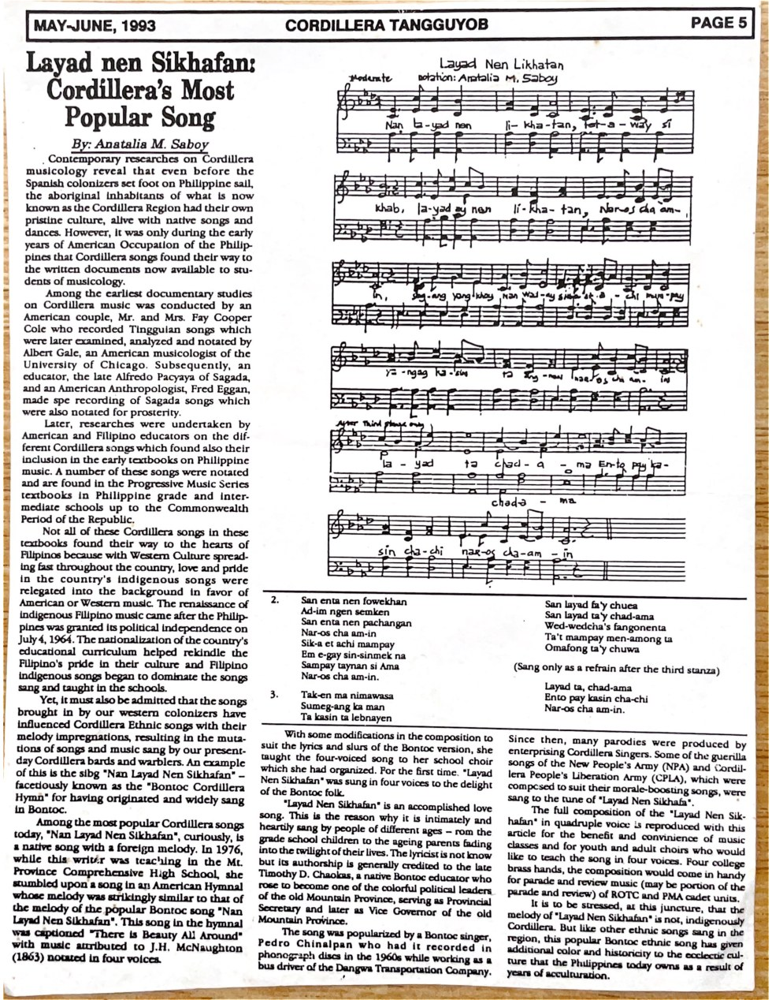
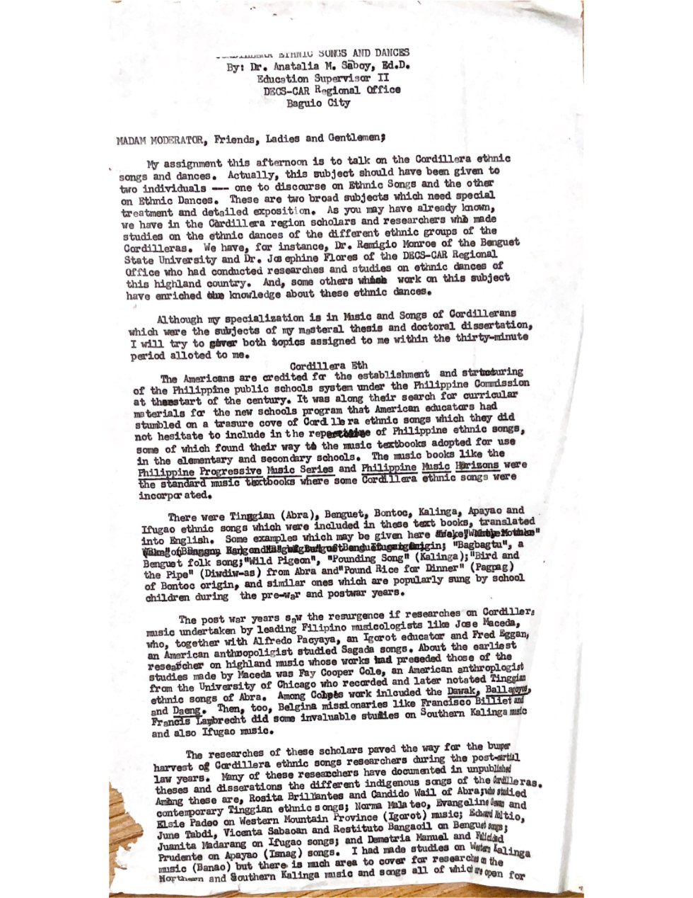

TUVYAN · FAMILY ARCHIVE · RESEARCH & MUSIC
Anatalia Magkachi Saboy
Writings on Cordillera songs, dance and cultural heritage—presented under her own authorship, with original documents alongside contextual descriptions.
This collection brings together two surviving items from the family materials supplied for TUVYAN. Each entry links to its own archival page, where the original pages can be examined in detail. The collection is not intended as a complete bibliography.
Life, education and family heritage
Read the expanded biography of Anatalia Magkachi Saboy, including her studies, career in music education, the Magkachi family’s historical standing in Bontok, Mountain Province, and archival photographs reproduced from Tate U. H. Ellinger’s Friend of the Brave.
Read the biography and view historical photographs →
Explore the collection

PUBLISHED ARTICLE · MAY–JUNE 1993
Layad nen Sikhafan: Cordillera’s Most Popular Song
Article published in Cordillera Tangguyob, page 5. Includes the original newspaper image and a printed four-part musical score with a distinct notation credit.
Read the article and inspect the notation →
ARCHIVAL ADDRESS · DATE UNCONFIRMED
Cordillera Ethnic Songs and Dances
Three preserved typescript pages from an address attributed to Dr. Anatalia M. Saboy, Ed.D., identified in the source as Education Supervisor II, DECS–CAR.
Read the address and view the source pages →For other family compositions and historical scores, return to Music & Recordings.